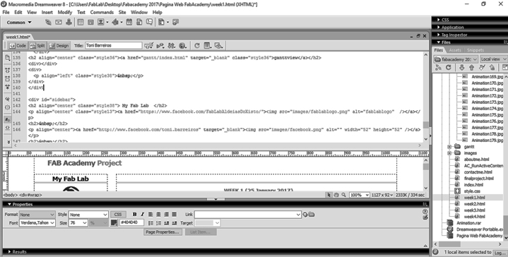
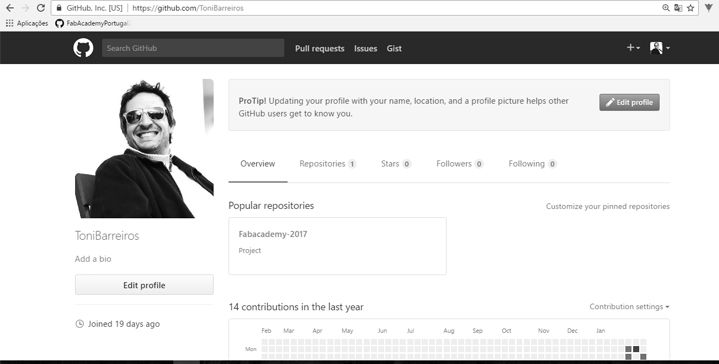
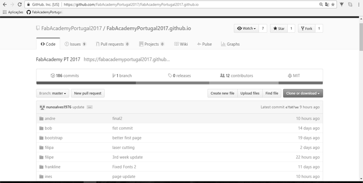
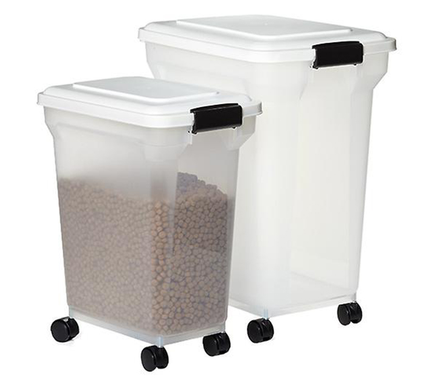
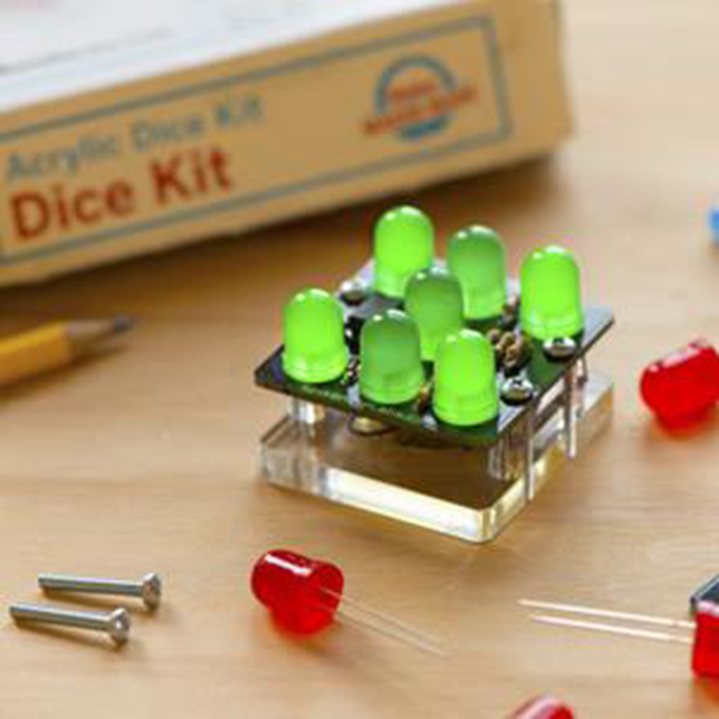
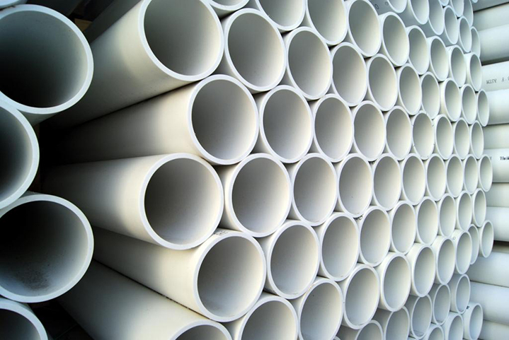

WEEK 1 (25 January 2017)
[Principles and Practices, and Project Management]
The first assignment for the FabAcademy was to build a personal site. I will upload my website files. We also need to create a class archive where we describe who we are and which are the constrains of our final project proposal. My website was created on Dreamweaver, I then used the homepage as a template (free Bootstrap themes and templates) for each additional page, to maintain continuity throughout the site. I installed the GitHub and learned the steps to publish my website, With the help of my remote instructor Luís Carvão.
Objectives
- Build my website
- GitHub and learn the steps to publish my website
- Document the final project
Build my personal site
My website was created on Dreamweaver, I then used the homepage as a template (free Bootstrap themes and templates)
I used Dreamweaver because I think that it's very easy and I have used other Adobe Suite programs. My preference is to write the code by hand. Tagging and grouping elements and then formatting afterwards to improve performance.
with Dreamweaver I can work with code and design at the same time. I think that “DW” is useful for someone unfamiliar with web design. I know that it is not the best program but it is very simple to use. On the top panel you can see the code design, it’s easy to detect if something is wrong. I can learn about the code with the top panel, because when I click on something I can see the program’s code. Other good thing in “DW” is that I can copy code like a video and put into the bottom panel and see what happens on the top panel. Also I can see how the web works by clicking "F12" (the preview button), the web navigator opens with your local html file. I can see how my web works.
I Used Photoshop to edit the photos (Image Size - Width 719 and Height 364) and I Desaturated the images.

Install Git
- I had never used GitHub Before
- Git is an open source version control system, very useful to handle projects


Using GIT
- We can clone a repository:git clone repository-name
- We can add a file to our work: git add all-files-to-be-staged
We will use git add * - We can commit our work: git commit -m 'some message'
- We can upload to the originally repository:git push
The beauty of using GIT is that I get to work on my project from my own computer. I develop the pages and then when I am ready to turn them public, I go through the easy process:
- git add this-file
- git commit -m 'update this week'
- git push>
My first commit/pull/push was in collaboration with my instructor Luis Carvão who told what to do with the terminal.
The location in my drive where I have my files available is in my Documents. I started by deleting the files I had and then I made a file update.
Plan and sketch my final project
Automated Cat Feeder
For my final project I decided to build a smart food and water dispenser for my two cats
To be able to check my cats nutrition and daily consumption rate as well i get notifications when food and water supplies are lowering.
Food dispenser enables me to feed my cats just like the wild typical ones; it has a small bowl that allows to dispense small amounts of food frequently throughout the day. Its sealed reservoir conserves kibbles for one month and keeps them fresh and strong.
Water dispenser it keeps the water running and fresh and encourages cats to drink more. The water dispenser includes a filter, which removes bad tastes and smells which are annoying for cats.
- We can activate the water fountain continuously
- We can activate or desactivate the pump of the fountain at anytime we want (Example: You want it to be turned off during the night because you don’t want to hear the sound of the water flowing)
- We can activate it only when the cat is near the Automated Cat Feeder
Future improvements include ...

Steps:
List of some parts and components that I need to make this project:
Search for examples and studie how to make my project - Homemade Automatic Dog Feeder
Drawing the cat feeder
Drawing parts of the project
Make a 3D Model of the project
Create 3D STL parts
Create a Snack Dispenser
Create a Wifi Adaptor
Mill a Board PCB
Programming the Board
Buy a continuous Rotation Servo
Pin Headers for the Servos
Buy a 10 Watt 5V USB Power supply
Create a heat shrink tube
…
Example of a Food Container

Valchromat
PCB Board
Continuous Rotation Servo
Pin Headers for the Servos

Electronics kits and Components

PVC pipe for Feeder Nozzles

...
Sketches:
Finally, here are my first drawings and ideas on my sketchbook
Planning:
ganttview